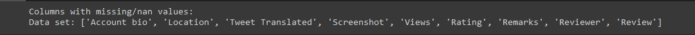
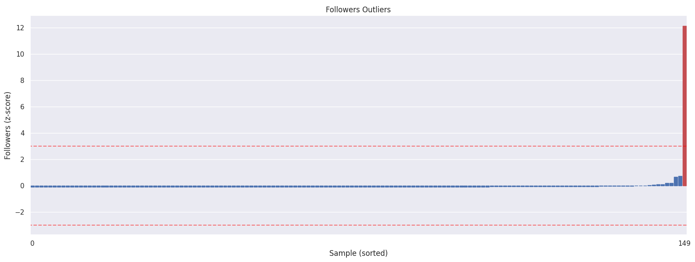
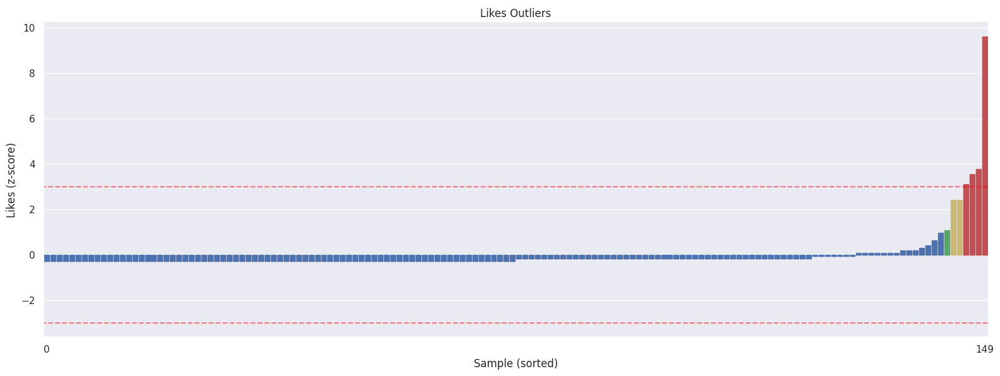
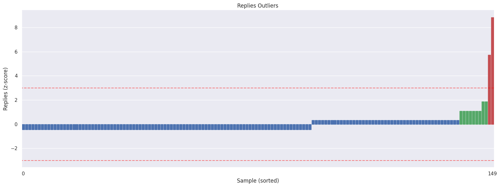
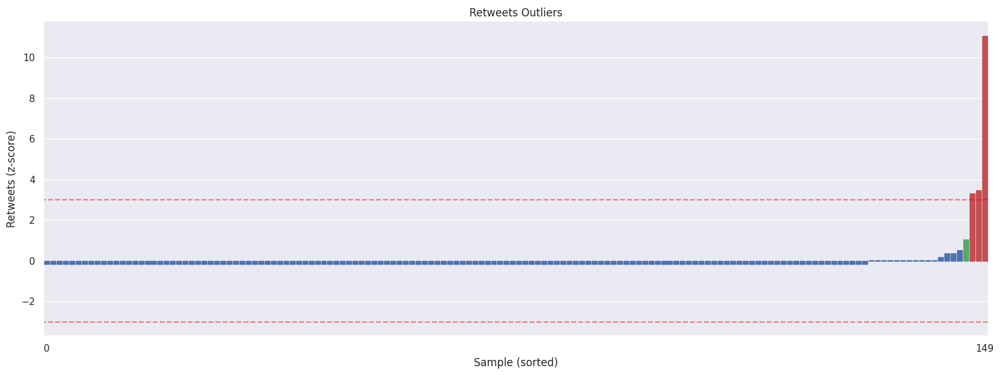
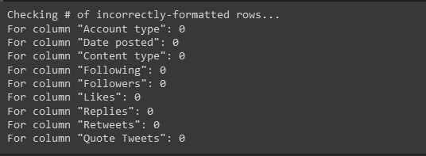
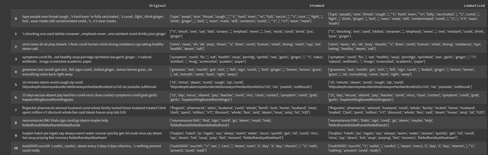
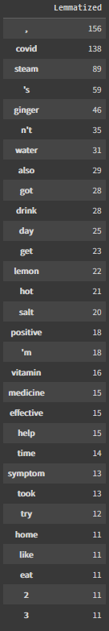
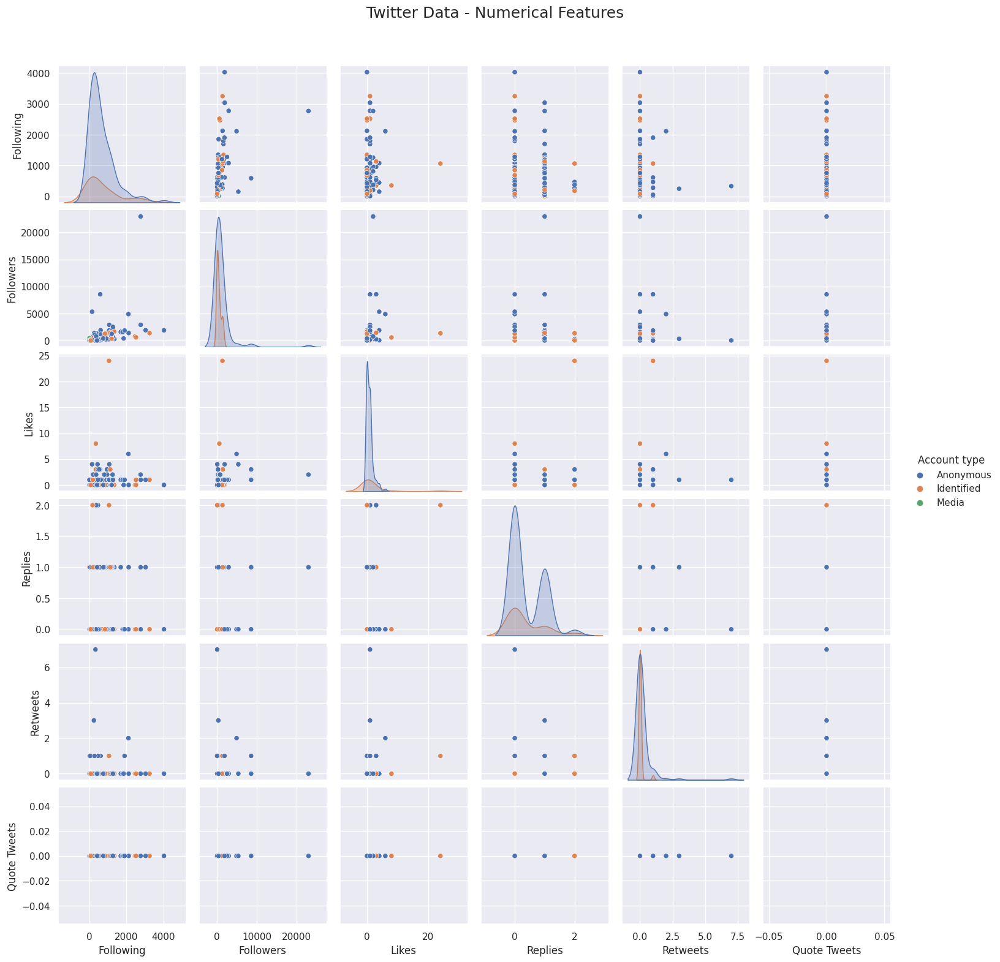
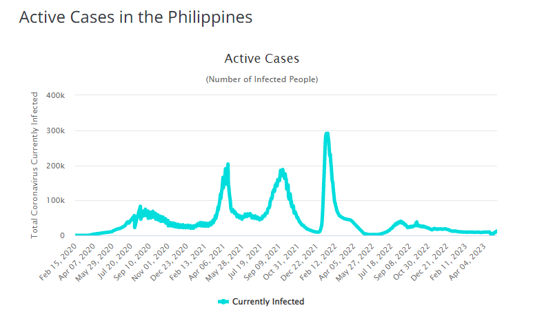

We are conducting an analysis on tweets from 2016-2022 to determine events that may have triggered the spread of mis/disinformation regarding tuob and herbal medicines' ability to cure COVID-19. We aim to process and investigate the data from these tweets to hopefully gain more insight about the proliferation of misinformation on Twitter during the pandemic.
Data Science Team
Francis Mamuyac Albarracin, WFU
Zachary R. Nabong, WFW
Jeremy King L. Tsang, WFW
Why are we doing this?
Motivation
The circulation of mis/disinformation on COVID-19 has been shown to increase public anxiety and distrust (Greene & Murphy, 2021). The warp in public perception and public distrust can lead to serious repercussions given the circumstances, as sick individuals may delay seeking proper medical treatment due to their false belief on alternative medicines, thus putting their life in greater danger.
Research Question
What events have triggered the spread of mis/disinformation about tuob and herbal medicines being able to cure COVID-19?
Hypothesis
The timing of the endorsements of famous personalities correlates to the spread of mis/disinformation on alternative cures for COVID-19.
Null Hypothesis
The timing of the endorsements of famous personalities has no correlation to the spread of mis/disinformation on alternative cures for COVID-19.
Action Plan
Analyze the frequency and posting time of mis/disinformation tweets about tuob and herbal medicines being able to cure COVID-19.
We mined Twitter for fake news data on COVID-19 alternative remedies.
Before we begin exploring the data, preprocessing techniques must first be applied in order to ensure the cleanliness of the data.
1.a. Handling missing values
When looking for missing values, we can observe that `Account bio`, `Location`, `Tweet Translated`, `Screenshot`, `Views`, `Rating`, `Remarks`, `Reviewer`, `Review` are all listed.
print("Columns with missing/nan values:")
print("Data set:", df_dataset.columns[df_dataset.isna().any()].tolist())

Codeblock output
Some of these columns, including `Tweet Translated`, `Screenshot`, `Views`, `Rating`, `Remarks`, `Reviewer`, and `Review`, are optional columns that we have opted not to fill out during data collection.
On the other hand, `Account bio` and `Location` are columns with missing values given that Twitter users may opt to leave these fields blank. Given that there is already a limited amount of data, dropping the samples is not ideal. In addition, `Account bio` and `Location` are not relevant variables for what we want to analyse later on. Therefore, given the irrelevancy of said columns and small number of samples, we instead choose to drop the columns instead of the samples.
In addition to columns with missing values, we can also look to drop columns that are completely filled up but are irrelevant to analysis. These include `ID`, `Timestamp`, `Tweet URL`, `Group`, `Collector`, `Category`, `Topic`, `Keywords`, `Account handle`, `Account name`, `Joined`, `Tweet Type`, and `Reasoning`.
After handling missing values, we turn our attention into possible outlier values. While we were able to preserve our samples by dropping columns when handling missing values, the same cannot be done for outlier data. These data can heavily affect our analysis and results later on.
Using the following code, we begin by looking into our outlier data based on each variable.
from sklearn.preprocessing import StandardScaler
import seaborn as sns
# Standardize the features to get z-scores
df_scaled = df_dataset.copy(deep=True)
scaler = StandardScaler()
df_scaled[['Followers']] = scaler.fit_transform(df_scaled[['Followers']])
followers_zscore = df_scaled['Followers']
n_out1 = len(followers_zscore[abs(followers_zscore) > 1])
n_out2 = len(followers_zscore[abs(followers_zscore) > 2])
n_out3 = len(followers_zscore[abs(followers_zscore) > 3])
print(f"Number of outliers in 'Followers' (std=1): {n_out1}")
print(f"Number of outliers in 'Followers' (std=2): {n_out2}")
print(f"Number of outliers in 'Followers' (std=3): {n_out3}")
# Define function for coloring bars
def color_bars(ax, df):
for i in range(len(df)):
val = abs(df.loc[i, 'Followers'])
if val <= 1:
color = 'b'
elif val <= 2:
color = 'g'
elif val <= 3:
color = 'y'
else:
color = 'r'
ax.get_children()[i].set_color(color)
# Create a figure with two subplots
fig, (ax1, ax2) = plt.subplots(nrows=2, figsize=(16, 12))
# Plot the Followers distribution
sns.barplot(x=df_scaled.index, y=df_scaled['Followers'], ax=ax1)
sns.despine(ax=ax1)
ax1.set(title='Followers Outliers', xlabel='Sample', ylabel='Followers (z-score)')
ax1.set_xticks([0, len(df_scaled)-1])
ax1.axhline(y=3, xmin=-0.5, xmax=len(df_scaled)-0.5, color='red', alpha=0.5, ls='--') # Standard deviation lines
ax1.axhline(y=-3, xmin=-0.5, xmax=len(df_scaled)-0.5, color='red', alpha=0.5, ls='--')
color_bars(ax1, df_scaled) # Color the bars
# Plot the Followers distribution, but sorted
df_scaled_sorted = df_scaled.sort_values(['Followers']).reset_index(drop=True)
sns.barplot(x=df_scaled_sorted.index, y=df_scaled_sorted['Followers'], ax=ax2)
sns.despine(ax=ax2)
ax2.set(title='Followers Outliers', xlabel='Sample (sorted)', ylabel='Followers (z-score)')
ax2.set_xticks([0, len(df_scaled_sorted)-1])
ax2.axhline(y=3, xmin=-0.5, xmax=len(df_scaled_sorted)-0.5, color='red', alpha=0.5, ls='--') # Standard deviation lines
ax2.axhline(y=-3, xmin=-0.5, xmax=len(df_scaled_sorted)-0.5, color='red', alpha=0.5, ls='--')
color_bars(ax2, df_scaled_sorted) # Color the bars
plt.tight_layout()
plt.show()




Followers, Likes, Replies, and Retweets distributions
We can observe that outlier data do exist in our dataset. Even more concerning is the fact that these outlier data go as high 10 standard deviations away (std=10). In order to make sure we that these samples would not skew our analysis later, we can only drop them.
In order to ensure the validity and consistency of the data, a quick set of tests are conducted to find incorrectly-formatted data. To accomplish this, we created a mask with the correct format for each column and compared it with the dataset entries. As seen below we can see that the results show no formatting mistakes for all columns.
import re
print("Checking # of incorrectly-formatted rows...")
# Check account type
account_type_mask = df_dataset['Account type'].isin(['Anonymous','Identified','Media'])
print(f"For column \"Account type\": {df_dataset[~account_type_mask].shape[0]}")
# Check date posted (DD/MM/YY HH:MM)
date_posted_pattern = re.compile(r'(0[1-9]|[1-2][0-9]|3[0-1])\/(0[1-9]|1[0-2])\/([0-9]{2}) (2[0-3]|[01]?[0-9]):[0-5][0-9]')
date_posted_mask = df_dataset['Date posted'].astype(str).str.match(date_posted_pattern)
print(f"For column \"Date posted\": {df_dataset[~date_posted_mask].shape[0]}")
# Check content type
content_type_mask = df_dataset['Content type'].isin(['Rational','Emotional','Transactional'])
print(f"For column \"Content type\": {df_dataset[~content_type_mask].shape[0]}")
# Check for valid whole numbers
whole_number_pattern = re.compile(r'^\d+$')
for col in ['Following', 'Followers', 'Likes', 'Replies', 'Retweets', 'Quote Tweets']:
number_mask = df_dataset[col].astype(str).str.match(whole_number_pattern)
print(f"For column \"{col}\": {df_dataset[~number_mask].shape[0]}")

Output of the codeblock
1.d. Categorical data encoding
Looking at our remaining columns, we can observe that there are two categorical variables, `Account type` and `Content type`. In order to use the following variable later on, we will need to convert these columns to numerical data. To accomplish this, we perform one-hot encoding on both categories.
This will make it easier to perform analysis and modeling with these variables later on, espcially beside other numerical data.
1.e. Natural Language Processing
Now that we have made sure that our data set has no blemishes, we can begin with the processing. We make use of the NLP (Natural Language Processing) module found within Python in order for us to turn our dataset to a more structured and workable set
We begin our process by 'cleaning' the dataset and transforming special symbols such as emojis into words, as the usage of emojis may provide extra context to the tweets they are being used in.
import pandas as pd
import re
import copy
import nltk
# Handle Emojis [2]
url_emoji = "https://drive.google.com/uc?id=1G1vIkkbqPBYPKHcQ8qy0G2zkoab2Qv4v"
df_emoji = pd.read_pickle(url_emoji)
df_emoji = {v: k for k, v in df_emoji.items()}
def emoji_to_word(text):
for emot in df_emoji:
text = re.sub(r'('+emot+')', "_".join(df_emoji[emot].replace(",","").replace(":","").split()), text)
return text
# Handle Emoticons [2]
url_emote = "https://drive.google.com/uc?id=1HDpafp97gCl9xZTQWMgP2kKK_NuhENlE"
df_emote = pd.read_pickle(url_emote)
def emote_to_word(text):
for emot in df_emote:
text = re.sub(u'('+emot+')', "_".join(df_emote[emot].replace(",","").split()), text)
text = text.replace("<3", "heart" ) # not included in emoticons database
return text
texts = copy.deepcopy(df_dataset['Tweet'])
texts = [emoji_to_word(t) for t in texts]
texts = [emote_to_word(t) for t in texts]
after converting the emojis, we made use of a new array called `texts` which we used to store the new tweets as we wish to turn all the words into lowercase in order to make the dataset easier to work with.
import string
# convert to lowercase
texts = [t.lower() for t in texts]
# replace tuob and suob with steam
texts = [t.replace('tuob', 'steam').replace('suob', 'steam') for t in texts]
# remove punctuation
texts = [t.translate(str.maketrans('', '', string.punctuation)) for t in texts]
You may have noticed that we included a line of code that replaced `tuob` or `suob` with `steam`. This was done by us as a sort of bandaid solution as the translator was either ignoring the word entirely or misreading the word as `subo` leading to incorrect translation.
In order to maximize the use of the NLP module, we decided to translate the tweets first from Tagalog to English as the module was not optimized to handle tweets in Tagalog.
# Removing stopwords might be tedious for multilingual texts
from nltk.corpus import stopwords
from nltk.tokenize import word_tokenize
# CHEAP SOLUTION: translate texts to English (this is not 100% accurate)
from googletrans import Translator
# translate to English
translator = Translator()
texts_en = [t.text for t in translator.translate(texts, src='tl', dest='en')]
Now that we converted the dataset into English, we could know start with actually structuring the data. First we started by tokenizing the data. Tokenizing is when we conviently split up text word by word. This allowed us to work with smaller pieces of data that were still meaningful even outside of context of the rest of the text.
After tokenizing, we also made sure to remove the stopwords in our dataset. Stopwords are pretty much the words we don't really want to care about, so we filter them out of our data frame.
texts_tok = []
for text in texts_en:
# tokenize the text into words
words = word_tokenize(text)
# remove stopwords
filtered_words = [word for word in words if word.lower() not in stopwords.words('english')]
# convert back into sentence
filtered_sentence = ' '.join(filtered_words)
texts_tok.append(filtered_sentence)
The process of tokenizing and stopwords removal was similar to our earlier methods, as you can see with the use of a new array called `texts_tok`.
With the data now easier to work with, we simplified it further with Stemming and Lemmatization. Stemming is when you strip a word down to its root word. Kind of like turning a fraction into its simplest form. Lemmatization is like stemming but will give you a complete word that makes sense when you read it instead of a fragment of a word.
We accomplished stemming and lemmatization by making use of separate variables called `stemmer` and `lemmatizer` respectively, which was used in the `stem_lem` function for the process of stemming/lemmatization.
from nltk.stem import PorterStemmer, WordNetLemmatizer
# Initialize the stemmer and lemmatizer
stemmer = PorterStemmer()
lemmatizer = WordNetLemmatizer()
texts_stem, texts_lem = [], []
def stem_lem(text):
words = text.split()
# Stem each word
stemmed_words = [stemmer.stem(word) for word in words]
# Lemmatize each word
lemmatized_words = [lemmatizer.lemmatize(word) for word in words]
# Return the stemmed and lemmatized words as a tuple
texts_stem.append(stemmed_words)
texts_lem.append(lemmatized_words)
return (stemmed_words, lemmatized_words)
# Process each text in the array
processed_texts = [stem_lem(t) for t in texts_tok]
df_sl = pd.DataFrame({'Original': df_filt['Tokenized'], 'Stemmed': texts_stem, 'Lemmatized': texts_lem})
df_sl.style.set_properties(**{'text-align': 'left'})

First 10 rows of the new dataframes
The final result from all the processing was the creation of a final dataframe called `df_sl` and this dataframe was used in getting the common `stemmed` and `lemmatized` words that gave us an insight as to which "cure" was most prevalent among the tweets.

Most common words from the Lemmatized dataframe
From the results, it was concluded that `steam` in this case `tuob` or `suob` was the most talked about "cure" for COVID, followed by `ginger`, `lemon`, `salt` and lastly, `vitamins`.
1.f. Time series analysis binning
In order to do a time series analysis of our data, specifically the `Date posted` column, there is the option to either interpolate or bin the time points. However given the large range of time in which the data points are collected (2020-2022) and the small size of the dataset, binning is a much more feasible method. 14-day binning and monthly binning were chosen as the intervals. Given the limited dataset, monthly binning has a higher change of providing a clear distinction of spikes and peaks, while 14-day binning would make identifying which specific events (if there are any) may have resulted in the spike/peak. The process of binning can be found with the visualization of the time series thorough line plots.
2. Visualization
Now we can explore our data by visualizing its features.
2.a. Bar Plot
The first thing we are interested in looking into is finding possible connections between `Account Type` and `Content Type`. To answer this question, we create a Grouped Barplot that shows the number of samples for each `Content Type` grouped by `Account Type`.
# Group the DataFrame by 'Account type' and 'Content type' and count the number of occurrences
df_count = df_dataset.groupby(['Account type', 'Content type'])['Content type'].count().reset_index(name='Count')
# Create a nested bar chart with Plotly
fig = px.bar(df_count, x="Account type", y="Count", color="Content type", barmode="group")
# Customize the layout of the chart
fig.update_layout(
title="Number of Samples per Content Type by Account Type",
xaxis_title="Account Type",
yaxis_title="Count",
legend_title="Content Type",
font=dict(
family="Arial",
size=14,
color="#333333"
)
)
# Show the chart
fig.show()
The resulting graph shows some interesting results. The most obvious result is that `Emotional` tweets far outnumber `Rational`. `Transactional` tweets can also be seen to be very rare, with only one instance present. Additionally, most mis/disinformation comes from `Anonymous` account types, followed by `Identified`, and finally `Media` with one instance.
A more notable observation is the distribution and ratio of `Emotional` and `Rational` tweets for `Anonymous` and `Identified`. `Identified` accounts can be seen to have close to a 2:1 split for `Emotional` and `Rational` tweets, however `Anonymous` tweets have a significantly higher ratio close to 5:1. This uneven ratio may suggest that `Anonymous` accounts are more likely to post mis/disinformation tweets `Emotionally`.
2.b. Scatterplots
Next, we want to look into the distribution of numerical features such as `Following`, `Followers`, `Likes`, `Replies`, `Retweets`, `Quote Tweets` among `Account Types` using a Scatter Plot Matrix plot to find possible relationships between them.
# Define the categorical and numerical features
feat_cat = ['Account Type_Anonymous', 'Account Type_Identified', 'Account Type_Media', 'Content Type_Emotional', 'Content Type_Rational', 'Content Type_Transactional']
feat_num = ['Following', 'Followers', 'Likes', 'Replies', 'Retweets', 'Quote Tweets']
import matplotlib.pyplot as plt
import seaborn as sns
# Set plot styling
sns.set(rc={'figure.figsize':(16,9)})
sns.set_theme(style="darkgrid")
# Plot the distribution of numerical features
g = sns.pairplot(data=df_dataset[feat_num+['Account type']], hue='Account type')
g.fig.suptitle("Twitter Data - Numerical Features", fontsize=18, y=1.05) # y: vertical position of title
plt.show()

Scatterplot visualization
Looking in the resulting plot, there no standout patterns can be observe. `Anonymous` and `Identified` `Account Types` are scattered randomly. Additionally, `Media` `Account Types` may seem to be missing in the scatter plots due to only having one sample in the entirety of the dataset, as seen in the bar plot.
2.c. Heat Map
We also want to check if there are any correlations between the numerical features. We use a heat map in order to visualize possible correlations between features.
Looking at the resulting heat map, we can see that there is little correlation between the numerical features. The numerical features with the greatest correlation are `Following` and `Followers`, which may be due to the fact that the more you follow other users, the more likely that others may follow back, cause the said relation. Aside from that, there are no other strong correlations that can be observed.
2.d. Line Plot (Time-series)
The last thing we want to look into are possible trends are present in mis/disinformation. To do this, we create two line plots, one for 14 day binning and another for monthly binning.
df_dataset['Date posted'] = pd.to_datetime(df_dataset['Date posted'])
df_dataset_14day = df_dataset.groupby(pd.Grouper(key='Date posted', freq='14D',convention='start')).size()
# Convert the pandas series to a DataFrame
df_dataset_14day = df_dataset_14day.to_frame(name='14 Day Tweet Count')
# Reset the index and rename the column to 'Date posted'
df_dataset_14day = df_dataset_14day.reset_index().rename(columns={'Date posted': 'Date posted', 0: '14 Day Tweet Count'})
# Create a line plot using Plotly
fig = px.line(df_dataset_14day, x='Date posted', y='14 Day Tweet Count', title='14 Day Binning Tweet Count')
fig.show()
df_dataset['Date posted'] = pd.to_datetime(df_dataset['Date posted'])
df_dataset_monthly = df_dataset.groupby(pd.Grouper(key='Date posted', freq='1M',convention='start')).size()
# Convert the pandas series to a DataFrame
df_dataset_monthly = df_dataset_monthly.to_frame(name='Monthly Tweet Count')
# Reset the index and rename the column to 'Date posted'
df_dataset_monthly = df_dataset_monthly.reset_index().rename(columns={'Date posted': 'Date posted', 0: 'Monthly Tweet Count'})
# Create a line plot using Plotly
fig = px.line(df_dataset_monthly, x='Date posted', y='Monthly Tweet Count', title='Monthly Binning Tweet Count')
fig.show()
Looking at our time series data, we can quickly observe that there are (3) major peaks in both the 14 day binning and monthly binning. Most notably, when we compare the monthly binning side-by-side to the number of active cases of COVID-19, we can observe that the spikes happen at around the same time.

Active COVID cases line graph (Philippines)
Here's what we found out.
1. Statistical modeling
Before perfoming any statistical tests, we will first be identifying the dates of key endorsements for both tuob or suob and salabat.
The endorsement of tuob/suob that become prominent came from the ```Cebu Governor Gwendolyn Garcia```.
This endorsement started as early as June 1, 2020, with a fact check article by Rappler releasing at June 30, 2020
(Rappler), and VERA Files on July 2, 2020
(VeraFiles).
On the other hand, the misinformation on salabat as a cure for COVID-19 can be most commonly traced to popular facebook groups such as ```Natural Cures : Halamang Gamot```,
```Natural Herbs Halamang Gamot atbp Lunas```, and ```Our Daily Health```. These groups, which had ten thousands to hundred thousands of followers posted the misinformation
around February 7-9, 2020. The fact checking articles for these were released February 12, 2020 (Rappler)
and February 18, 2020 (VERAFiles).
Now that we have identified the timing of endorsements, we can create segments of data for before and after the event and fit ```regression models``` on the segments.
With the regression models for both before and after the event, we can compare their slopes using ```T-Test``` in order to identify if there is significant difference between the two time periods.
1.a. Tuob/Suob
Segmented Linear Regression
Starting with tuob/suob, we get 6 points of time before and after the endorsement, which means that we are observing a 6 month time period
(3 months prior and 3 months post). After we have obtained both segments, we perform linear regression on both.
## Perform regression modeling
from sklearn.linear_model import LinearRegression
from sklearn.metrics import r2_score, mean_squared_error
import statsmodels.api as sm
# Convert datetime to int
x = df_dataset_count['date'].astype(int) / 10**9 # Convert to seconds (UNIX epoch start)
x = x.values.reshape(-1, 1)
y = df_dataset_count['count']
# Divide the dataset based on the date (before and after June 1, 2020)
before_mask = df_dataset_count['date'] < pd.Timestamp('2020-06-01')
after_mask = df_dataset_count['date'] >= pd.Timestamp('2020-06-01')
x_before = x[before_mask][-6:]
y_before = y[before_mask][-6:]
x_after = x[after_mask][:6]
y_after = y[after_mask][:6]
#--------------------------------------------------------------
# Linear Regression Model - Before Edorsement
#--------------------------------------------------------------
# Stastical approach
x_lms = sm.add_constant(x_before)
linear_model_stat = sm.OLS(y_before, x_lms)
lms_results = linear_model_stat.fit()
p_values = lms_results.pvalues[1:]
# Calculate predicted values using the statistical slope
y_linear_before = x_lms.dot(lms_results.params)
# Calculate R2 and RMSE for linear regression model
linear_r2 = r2_score(y_before, y_linear_before)
linear_rmse = np.sqrt(mean_squared_error(y_before, y_linear_before))
# Get the slope (coefficient) from the fitted model
slope_before = lms_results.params[1]
print("Slope of the line (Statistical Approach):", slope_before)
print("\nModel Evaluation")
print("Linear Regression: RMSE=%.2f, R2=%.2f" % (linear_rmse, linear_r2))
for i, p_value in enumerate(p_values.index):
print(f'P({p_value}): {p_values[i]}')
if any(p_values <= 0.05):
print("There is a significant relationship between the predictor and the response\n")
else:
print("There is no significant relationship between the predictor and the response\n")
#--------------------------------------------------------------
# Linear Regression Model - After Edorsement
#--------------------------------------------------------------
# Stastical approach
x_lms = sm.add_constant(x_after)
linear_model_stat = sm.OLS(y_after, x_lms)
lms_results = linear_model_stat.fit()
p_values = lms_results.pvalues[1:]
# Calculate predicted values using the statistical slope
y_linear_after = x_lms.dot(lms_results.params)
# Calculate R2 and RMSE for linear regression model
linear_r2 = r2_score(y_after, y_linear_after)
linear_rmse = np.sqrt(mean_squared_error(y_after, y_linear_after))
# Get the slope (coefficient) from the fitted model
slope_after = lms_results.params[1]
print("Slope of the line (Statistical Approach):", slope_after)
print("\nModel Evaluation")
print("Linear Regression: RMSE=%.2f, R2=%.2f" % (linear_rmse, linear_r2))
for i, p_value in enumerate(p_values.index):
print(f'P({p_value}): {p_values[i]}')
if any(p_values <= 0.05):
print("There is a significant relationship between the predictor and the response\n")
else:
print("There is no significant relationship between the predictor and the response\n")
# Plot the models
import plotly.graph_objects as go
# Convert timestamp to datetime for x-axis
xtt_before = pd.to_datetime(x_before.squeeze(), unit='s')
xtt_after = pd.to_datetime(x_after.squeeze(), unit='s')
# Create scatter plot traces for actual data
scatter_actual_before = go.Scatter(x=xtt_before, y=y_before, mode='markers', name='Count (Before)', marker=dict(color='blue', opacity=0.5))
scatter_actual_after = go.Scatter(x=xtt_after, y=y_after, mode='markers', name='Count (After)', marker=dict(color='green', opacity=0.5))
# Create line plot traces for linear regression models
line_regression_before = go.Scatter(x=xtt_before, y=y_linear_before, mode='lines', name='LR (Before)', line=dict(color='red'))
line_regression_after = go.Scatter(x=xtt_after, y=y_linear_after, mode='lines', name='LR (After)', line=dict(color='orange'))
# Add vertical line on June 1st
vertical_line = go.Scatter(x=[pd.to_datetime('2020-06-01')]*2, y=[min(y_before.min(), y_after.min()), max(y_before.max(), y_after.max())],
mode='lines', name='Tuob/Suob Endorsement', line=dict(color='black'))
# Combine the traces
data = [scatter_actual_before, scatter_actual_after, line_regression_before, line_regression_after, vertical_line]
# Set the layout
layout = go.Layout(
xaxis=dict(title='Date'),
yaxis=dict(title='Tweet Count'),
title='Segmented LR for COVID-19 Mis/Disinformation Tweets',
showlegend=True,
height=600
)
# Create the figure
fig = go.Figure(data=data, layout=layout)
# Show the figure
fig.show()
The resulting linear regression for both before and after the endorsement indicate that no significant relationship was found.
We do have to note that the number of tweets during this time period is very low. As we can see in the graph, only 1 tweet was
found during the 3 month period before the event and only 3 tweets were found during the 3 month period after the event.
T-Test
from scipy.stats import ttest_ind
from scipy.stats import ttest_rel
import numpy as np
# Perform t-test between the slopes
t_statistic, p_value = ttest_ind(slope_before, slope_after, equal_var=False)
# t_statistic, p_value = ttest_rel(slope_before, slope_after)
print("slope_before:", slope_before)
print("slope_after", slope_after)
print("T-test Results")
print("T-statistic:", t_statistic)
print("P-value:", p_value)
Performing the T-Test, we end up receiving an error message of
Precision loss occurred in moment calculation due to catastrophic cancellation. This occurs when the data are nearly identical. Results may be unreliable.
This error most likely occured due to the overall lack of activity during this period based on the data.
Thus with the T-Test failing, there is no conclusive evidence for difference, with our result being not significant
due to the lack of data. This lack of data may be due to its non-existence or due to tweet deletion.
1.b. Salabat
Similar to what was done for tuob/suob, we perform segmented linear regression and t-test for the endorsement date for salabat.
Segmented Linear Regression
## Perform regression modeling
from sklearn.linear_model import LinearRegression
from sklearn.metrics import r2_score, mean_squared_error
import statsmodels.api as sm
# Convert datetime to int
x = df_dataset_count['date'].astype(int) / 10**9 # Convert to seconds (UNIX epoch start)
x = x.values.reshape(-1, 1)
y = df_dataset_count['count']
# Divide the dataset based on the date (before and after February 7, 2020)
before_mask = df_dataset_count['date'] < pd.Timestamp('2020-02-07')
after_mask = df_dataset_count['date'] >= pd.Timestamp('2020-02-07')
x_before = x[before_mask][-6:]
y_before = y[before_mask][-6:]
x_after = x[after_mask][:6]
y_after = y[after_mask][:6]
#--------------------------------------------------------------
# Linear Regression Model - Before Edorsement
#--------------------------------------------------------------
# Stastical approach
x_lms = sm.add_constant(x_before)
linear_model_stat = sm.OLS(y_before, x_lms)
lms_results = linear_model_stat.fit()
p_values = lms_results.pvalues[1:]
# Calculate predicted values using the statistical slope
y_linear_before = x_lms.dot(lms_results.params)
# Calculate R2 and RMSE for linear regression model
linear_r2 = r2_score(y_before, y_linear_before)
linear_rmse = np.sqrt(mean_squared_error(y_before, y_linear_before))
# Get the slope (coefficient) from the fitted model
slope_before = lms_results.params[1]
print("Slope of the line (Statistical Approach):", slope_before)
print("\nModel Evaluation")
print("Linear Regression: RMSE=%.2f, R2=%.2f" % (linear_rmse, linear_r2))
for i, p_value in enumerate(p_values.index):
print(f'P({p_value}): {p_values[i]}')
if any(p_values <= 0.05):
print("There is a significant relationship between the predictor and the response\n")
else:
print("There is no significant relationship between the predictor and the response\n")
#--------------------------------------------------------------
# Linear Regression Model - After Edorsement
#--------------------------------------------------------------
# Stastical approach
x_lms = sm.add_constant(x_after)
linear_model_stat = sm.OLS(y_after, x_lms)
lms_results = linear_model_stat.fit()
p_values = lms_results.pvalues[1:]
# Calculate predicted values using the statistical slope
y_linear_after = x_lms.dot(lms_results.params)
# Calculate R2 and RMSE for linear regression model
linear_r2 = r2_score(y_after, y_linear_after)
linear_rmse = np.sqrt(mean_squared_error(y_after, y_linear_after))
# Get the slope (coefficient) from the fitted model
slope_after = lms_results.params[1]
print("Slope of the line (Statistical Approach):", slope_after)
print("\nModel Evaluation")
print("Linear Regression: RMSE=%.2f, R2=%.2f" % (linear_rmse, linear_r2))
for i, p_value in enumerate(p_values.index):
print(f'P({p_value}): {p_values[i]}')
if any(p_values <= 0.05):
print("There is a significant relationship between the predictor and the response\n")
else:
print("There is no significant relationship between the predictor and the response\n")
# Plot the models
import plotly.graph_objects as go
# Convert timestamp to datetime for x-axis
xtt_before = pd.to_datetime(x_before.squeeze(), unit='s')
xtt_after = pd.to_datetime(x_after.squeeze(), unit='s')
# Create scatter plot traces for actual data
scatter_actual_before = go.Scatter(x=xtt_before, y=y_before, mode='markers', name='Count (Before)', marker=dict(color='blue', opacity=0.5))
scatter_actual_after = go.Scatter(x=xtt_after, y=y_after, mode='markers', name='Count (After)', marker=dict(color='green', opacity=0.5))
# Create line plot traces for linear regression models
line_regression_before = go.Scatter(x=xtt_before, y=y_linear_before, mode='lines', name='LR (Before)', line=dict(color='red'))
line_regression_after = go.Scatter(x=xtt_after, y=y_linear_after, mode='lines', name='LR (After)', line=dict(color='orange'))
# Add vertical line on June 1st
vertical_line = go.Scatter(x=[pd.to_datetime('2020-02-07')]*2, y=[min(y_before.min(), y_after.min()), max(y_before.max(), y_after.max())],
mode='lines', name='Salabat Endorsement', line=dict(color='black'))
# Combine the traces
data = [scatter_actual_before, scatter_actual_after, line_regression_before, line_regression_after, vertical_line]
# Set the layout
layout = go.Layout(
xaxis=dict(title='Date'),
yaxis=dict(title='Tweet Count'),
title='Segmented LR for COVID-19 Mis/Disinformation Tweets',
showlegend=True,
height=600
)
# Create the figure
fig = go.Figure(data=data, layout=layout)
# Show the figure
fig.show()
T-Test
from scipy.stats import ttest_ind
from scipy.stats import ttest_rel
import numpy as np
# Perform t-test between the slopes
t_statistic, p_value = ttest_ind(slope_before, slope_after, equal_var=False)
# t_statistic, p_value = ttest_rel(slope_before, slope_after)
print("slope_before:", slope_before)
print("slope_after", slope_after)
print("T-test Results")
print("T-statistic:", t_statistic)
print("P-value:", p_value)
Note that we obtain similar results in testing for salabat as we did for tuob/suob.
Note that the time period for before the endosements is limited to three points (1 1/2 months)
as January 7 is the earliest tweet that the dataset contains.
2. Machine Learning/Computational Modeling
2.a. Visualization
As our topic focuses on misinformation, the data to be analyzed will be quantititative focused,
making the use of event detection the main tool for our machine learning analysis.
Visualization of data by week
To have a good idea on how our data is spread out, we decided to plot our dataset week by week.
This allowed us to see how the disinformation regarding our topic behaved over time during the
span of the pandemic.
## Plot data by day of week
import plotly.graph_objects as go
df_dataset_count['weekday'] = df_dataset_count['date'].dt.strftime('%a')
df_dataset_count['week'] = df_dataset_count['date'].dt.strftime('%Y-W%U') # Create a 'week' column based on the year and week number
weekly_counts = df_dataset_count.groupby(['week', 'weekday'])['count'].sum().reset_index()
# Sort the weekdays in the correct order
weekday_order = ['Sun', 'Mon', 'Tue', 'Wed', 'Thu', 'Fri', 'Sat']
weekly_counts['weekday'] = pd.Categorical(weekly_counts['weekday'], categories=weekday_order, ordered=True)
weekly_counts = weekly_counts.sort_values(['week', 'weekday'])
fig = go.Figure()
for week, data in weekly_counts.groupby('week'):
fig.add_trace(go.Scatter(
x=data['weekday'],
y=data['count'],
mode='lines+markers',
name=week))
fig.update_layout(
title='Weekly Counts',
xaxis={'categoryorder': 'array', 'categoryarray': weekday_order},
yaxis_title='Count')
fig.show()
The graph shows us the distribution of tweets on a given week. We can observe from this graph
that there seems to be more activity early in the week, Monday in particular, over other days.
We can also pinpoint three weeks with the highest activity in a single day, namely the Monday
of ```2021-W17```, Monday of ```2021-W40```, and Wednesday of ```2021-W49```.
Peak Point Detection
We now turn our attention to idenfitying what else could have caused the influx of disinformation tweets.
To accomplish this, we used the peak detection and change point detection models of machine learning.
We begin with Peak Detection to identify what dates to search for notable and historical events.
In order to perform peak detection, we made use of the scipy module by importing the find_peaks function.
This function allowed us to find all local maxima in a given graph by simple comparison of neighboring values.
## Perform peak detection
from scipy.signal import find_peaks
x = df_dataset_14day['date'].astype(int) / 10**9 # Convert to seconds (UNIX epoch start)
x = x.values.reshape(-1, 1)
y = df_dataset_14day['count']
peaks, _ = find_peaks(df_dataset_14day['count'],
height=5, # height of peaks
width=1, # width of peaks
threshold=1, # vertical distance to its neighboring samples
distance=7, # minimal horizontal distance (>= 1) in samples between neighbouring peaks
prominence=4) # vertical distance between the peak and its lowest contour line
# Extract event timestamps
events = df_dataset_14day.iloc[peaks]
# Plot peaks
fig = go.Figure()
# Original data
fig.add_trace(go.Scatter(
x=df_dataset_14day.index,
y=df_dataset_14day['count'],
hovertext=df_dataset_14day['date'].dt.strftime('%Y-%m-%d'),
mode='lines',
name='Original Data'))
# Peaks
fig.add_trace(go.Scatter(
x=events.index,
y=events['count'],
hovertext=events['date'].dt.strftime('%Y-%m-%d'),
mode='markers',
name='Peaks',
marker=dict(
color='red',
size=8,
symbol='x')))
# Additional points
tuob_endorsement_date = '2020-06-01'
salabat_date = '2020-02-07'
tuob_endorsement_index = df_dataset_14day['date'].sub(pd.Timestamp(tuob_endorsement_date)).abs().idxmin()
salabat_index = df_dataset_14day['date'].sub(pd.Timestamp(salabat_date)).abs().idxmin()
fig.add_trace(go.Scatter(
x=[tuob_endorsement_index for x in range(10)],
y=[y_1, y_2, y_3, y_4, y_5, y_6, y_7, y_8, y_9, y_10],
mode='lines',
name='Tuob Endorsement',
hoverinfo='text',
hovertext='Tuob Endorsement %s' % df_dataset_14day.loc[tuob_endorsement_index, 'date'].strftime('%Y-%m-%d'),
line=dict(color='green', width=1, dash='dash')
))
fig.add_trace(go.Scatter(
x=[salabat_index for x in range(10)],
y=[y_1, y_2, y_3, y_4, y_5, y_6, y_7, y_8, y_9, y_10],
mode='lines',
name='Salabat Endorsement',
hoverinfo='text',
hovertext='Salabat Endorsements %s' % df_dataset_14day.loc[salabat_index, 'date'].strftime('%Y-%m-%d'),
line=dict(color='blue', width=1, dash='dash')
))
fig.update_layout(height=600,
title='Twitter COVID Misinformation Peak Events',
xaxis_title='Time',
yaxis_title='Number of Tweets')
xtv = np.arange(0,len(df_dataset_14day),10)
xtt = df_dataset_14day['date'].dt.strftime('%Y-%m-%d')[xtv]
fig.update_xaxes(tickmode='array',
tickvals=xtv,
ticktext=xtt)
fig.show()
Through peak detection, we identified 4 notable local maxima of peaks in our graph throughout 2020
until 2022, with the tweet count hitting a global maximum during around April 2021. Upon further
research on the peak dates and events occuring around those times, we found that some of the peaks
coincide closely with spikes in total active COVID-19 cases in the Philippines. Here is the
comparision between the dataset peaks and COVID-19 active cases peaks.
Reference for covid cases: https://doh.gov.ph/covid19tracker
Dataset Peaks | COVID-19 Peaks
4/13/21 | 4/14/21 (Very Close)
8/17/21 | 9/2/21 (Close)
1/18/21 | 1/12/21 (Very Close)
11/22/22 | 8/10/22 (Far)
Two out of the four peaks are within a week's distance, and another one is within a month's distance.
Only the most recent peak, which is also the smallest peak, is significantly off with a distance of
around 3 months.
Change Point Detection
Following this, our group made use of the ruptures module in order to perform Change Point Detection
in order to identify the points in the dataset where trends in our graph start or finish.
import ruptures as rpt
import plotly.graph_objects as go
import numpy as np
data = df_dataset_14day['count'].values
# Change-point detection via Pelt algorithm
model = "rbf"
algo = rpt.Pelt(model=model).fit(data)
result = algo.predict(pen=.9) # Adjust the penalty value based on your data
fig = go.Figure()
# Original data
fig.add_trace(go.Scatter(
x=df_dataset_14day.index,
y=df_dataset_14day['count'],
hovertext=df_dataset_14day['date'].dt.strftime('%Y-%m-%d'),
mode='lines',
name='Original Data'))
# Change points
for cp_index in result[:-1]:
x_1 = df_dataset_14day.index[cp_index]
y_1, y_2, y_3, y_4, y_5 = -2, 1, 4, 7, 10
y_6, y_7, y_8, y_9, y_10 = 13, 16, 19, 22, 25
fig.add_trace(go.Scatter(
x=[x_1, x_1, x_1, x_1, x_1, x_1, x_1, x_1, x_1, x_1],
y=[y_1, y_2, y_3, y_4, y_5, y_6, y_7, y_8, y_9, y_10],
mode='lines',
name=df_dataset_14day['date'].dt.strftime('%Y-%m-%d')[cp_index],
hoverinfo='text',
hovertext='Change at %s' % df_dataset_14day['date'].dt.strftime('%Y-%m-%d')[cp_index],
line=dict(color='red', width=1, dash='dash')))
# Additional points
tuob_endorsement_date = '2020-06-01'
salabat_date = '2020-02-07'
tuob_endorsement_index = df_dataset_14day['date'].sub(pd.Timestamp(tuob_endorsement_date)).abs().idxmin()
salabat_index = df_dataset_14day['date'].sub(pd.Timestamp(salabat_date)).abs().idxmin()
fig.add_trace(go.Scatter(
x=[tuob_endorsement_index for x in range(10)],
y=[y_1, y_2, y_3, y_4, y_5, y_6, y_7, y_8, y_9, y_10],
mode='lines',
name='Tuob Endorsement',
hoverinfo='text',
hovertext='Tuob Endorsement %s' % df_dataset_14day.loc[tuob_endorsement_index, 'date'].strftime('%Y-%m-%d'),
line=dict(color='green', width=1, dash='dash')
))
fig.add_trace(go.Scatter(
x=[salabat_index for x in range(10)],
y=[y_1, y_2, y_3, y_4, y_5, y_6, y_7, y_8, y_9, y_10],
mode='lines',
name='Salabat Endorsement',
hoverinfo='text',
hovertext='Salabat Endorsements %s' % df_dataset_14day.loc[salabat_index, 'date'].strftime('%Y-%m-%d'),
line=dict(color='blue', width=1, dash='dash')
))
fig.update_layout(height=600,
title='Twitter COVID Misinformation Change Points',
xaxis_title='Time',
yaxis_title='Number of Tweets')
xtv = np.arange(0, len(df_dataset_14day), 10)
xtt = df_dataset_14day['date'].dt.strftime('%Y-%m-%d')[xtv]
fig.update_xaxes(tickmode='array',
tickvals=xtv,
ticktext=xtt)
fig.show()
Using the penalty value of 0.9, we were able to find a total of 6 change points in our dataset.
With 4 change points coinciding with upticks of Covid cases in the country:
March 2, 2021
July 20, 2021
September 28, 2021
September 13, 2022
With the remaining 2 change points coinciding with Covid cases either plateauing or falling off:
Hello! I’m Francis M. Albarracin, currently a 3rd year BS Computer Science student at the University of the Philippines - Diliman. I’ve always been interested in technology ever since I was a child and am always looking to learn more about all the different technologies and gadgets that we use today. Some of my hobbies include learning Japanese, basketball, incremental improvement, and optimization 🙂.
Hello! I’m Zachary R. Nabong, and I am a 2nd year BS Computer Science student at University of the Philippines - Diliman. Coding has always been something that has interested me, more specifically game development and data science. My hobbies include playing video games such as CSGO, Valorant, Rainbow Six and Dota 2.
Hi! I’m Jeremy King L. Tsang, a 4th year BS Computer Science student at University of the Philippines - Diliman. I am currently an undergraduate researcher at Service Science and Software Engineering Laboratory (S3), where I am focusing on identifying and improving student recruitment systems of higher education institutions in the Philippines. In my free time, I am fond of reading light novels online and practicing to play the piano.
We'd like to hear from you.
Please fill out this form to send us your comments and suggestions.